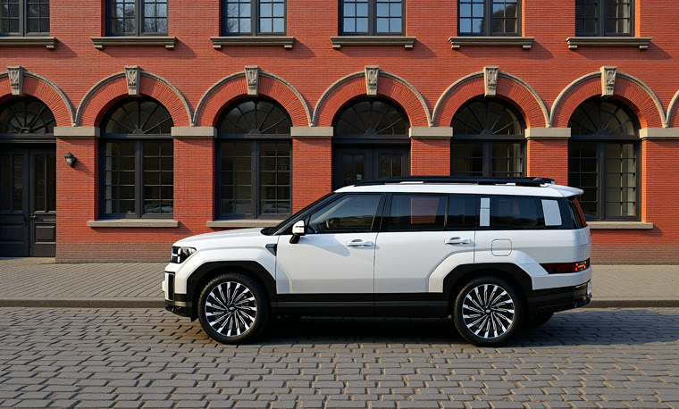
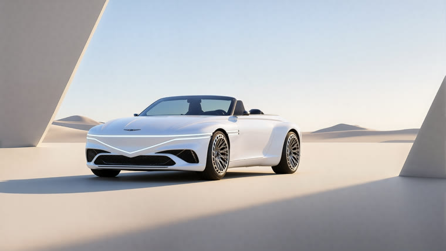
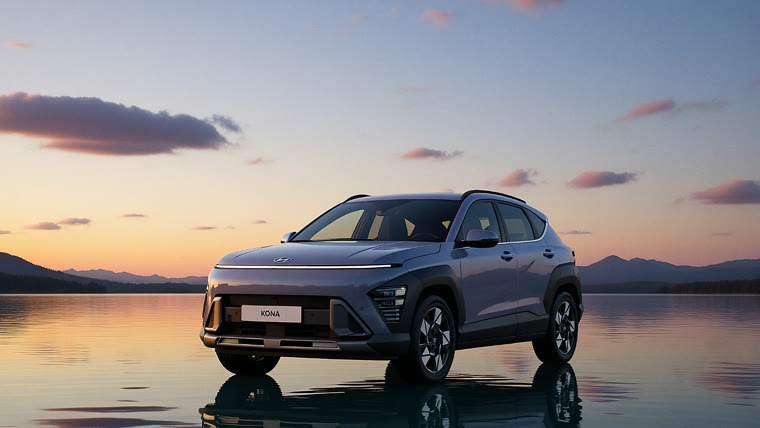
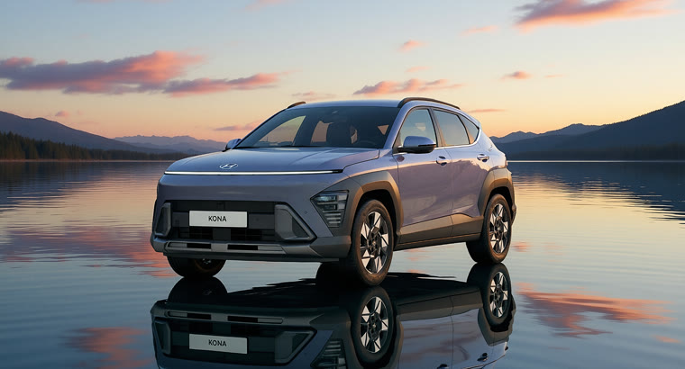

← 프로젝트 목록
GitHub
ComfyUI-GenAI 결과 이미지
이미지를 선택하면 원본 PNG를 열 수 있습니다.
FLUX Kontext · 차량 이미지 7장

붉은 아치 앞 흰색 SUV 측면

흰색 건축물 사이의 흰색 컨버터블
곡면 벽 앞의 짙은 파란색 SUV
노을 아래 흰색 컨버터블

노을을 등진 SUV 전면

산을 배경으로 수면에 비친 SUV 전면
에펠탑 앞 흰색 SUV